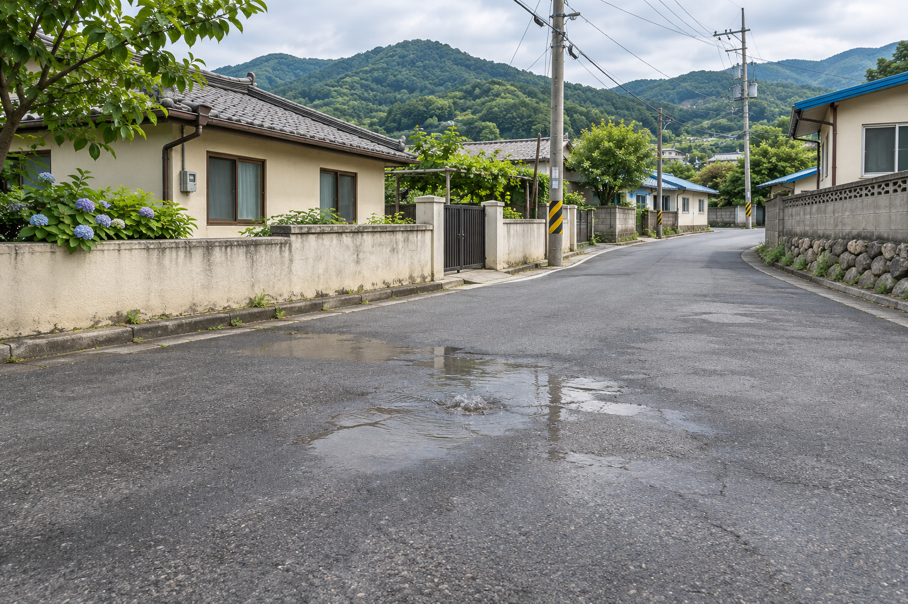

◈
GEUMSEONG · FIELD EXPERIENCE
금성개발 / 물길을 잇는 현장
영주 생활기반 복구 프로젝트

현장 신고 접수YEONGJU / WATER NETWORK
마을의 일상을 지키는 기술00:00
긴급 누수 신고 · 현장 출동
새는 물을 막고,
마을의 일상을 잇다.
탐지기를 들고 누수 지점을 찾으세요. 안전한 작업 공간을 만들고, 배관과 도로를 복구하는 오늘의 현장 담당자는 여러분입니다.
5단계 체험 · 터치 / 마우스 / 키보드 지원
교육용 모의 현장 · AI로 생성한 재현 이미지
FIELD REPORT / RESTORED
물길이 다시,
일상으로 이어집니다.
안전 확보부터 통수 검사까지 모든 복구를 마쳤습니다. 금성개발의 토목·상하수도 기술은 주민의 안전과 생활 기반을 지키는 일로 이어집니다.
0현장 점수
00:00소요 시간
5 / 5완료한 공정
금성개발 · 지역을 잇는 든든한 기술교육용 모의 체험 / 실제 작업은 전문 인력이 수행합니다.